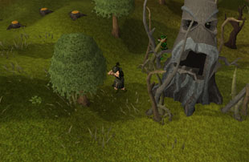
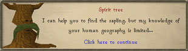
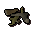
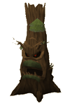

")
Evil Tree
Evil Tree is only accessible to RuneScape members. Please subscribe to get this feature.
One of the rewards for Evil Tree (invisible Woodcutting boost) lasts for a set amount of time after it is granted. This is in-game time; if you log out, that time will only continue to count down once you log back in.
Introduction

Sometimes, however, things don't follow the natural order of things. Whether it is because of some ancient, buried evil far below the ground, the influence of a savage god or demon, or simply the whim of nature itself, evil trees are known to appear from time to time, forever tainting the soil in which they grow. Leprechauns usually don't notice that the tree is evil until it is too late, and aren't much good at dealing with the problem as their small hands cannot grip a decent hatchet, and tinderboxes confound them.
This is where wandering adventurers come in handy...
Requirements
 Evil trees occur in a variety of forms, some of which are harder to deal with, so good Farming, Woodcutting and Firemaking levels are an advantage. You do not need to bring anything with you, as the leprechaun will supply you with a hatchet and a tinderbox when the tree exhibits its evil tendencies. On the other hand, you can use any hatchet you have on you to hack away at the tree and its roots.
Evil trees occur in a variety of forms, some of which are harder to deal with, so good Farming, Woodcutting and Firemaking levels are an advantage. You do not need to bring anything with you, as the leprechaun will supply you with a hatchet and a tinderbox when the tree exhibits its evil tendencies. On the other hand, you can use any hatchet you have on you to hack away at the tree and its roots.
Note that you can only nurture or attack two evil trees per day.
Getting Started

You can also talk to the spirit trees to discover where one is likely to be, and when it has reached maturity, they will offer to teleport you directly to the arborist's nightmare. If there are no evil trees currently menacing the lands of RuneScape, however, they won't have much to say on the subject.
The first stage of an evil tree's growth is as a sapling (which is entirely unsurprising: it may well be wicked and vicious, but it is still a tree). During this time, the leprechaun will merrily wander about asking passing adventurers to help nurture it. Anyone with the required Farming level can nurture the sapling without any tools simply by clicking on it.
There are five growth stages before the sapling expresses its true nature, at which point you should discover that its thrashing roots prevent you from directly harming the tree itself. In order to get access to the tree, you will need to use a hatchet to hack the roots away.
Each set of roots cut back will become kindling, which you can then use to set a fire at the base of the tree. The roots will grow back after some time, knocking back anyone attacking the tree nearby.
When the tree is denuded of some of its roots, you can set fires as noted above or use your hatchet to hack into its bark. Harming a tree in either way requires a Woodcutting or Firemaking level, which you can see below:
| Type | Farming Level to Nurture | Firemaking Level to Burn | Woodcutting Level to Hack | ||
 Normal |
1 | 1 | 1 | ||
|
 Oak |
7 | 15 | 15 | ||
 Willow |
15 | 30 | 30 | ||
 Maple |
22 | 45 | 45 | ||
 Yew |
30 | 60 | 60 | ||
 Magic |
37 | 75 | 75 | ||
 Elder |
42 | 85 | 85 |
Eventually, after some concerted efforts beating back thrashing roots and flailing bits of tree, it will die and the adventurers who have aided in its defeat will be able to claim the rewards of its demise.
Rewards
In addition to the experience earned while dealing with the evil tree, you may receive a few items the tree dredged up from the earth through its massive root network or parts of the tree itself. This includes noted logs of the evil tree's type (elder trees offer noted yew, magic, teak or mahogany logs), tree seeds, bird's nests, items like key halves and Treasure Trail clues, or gold.
Further to this, you will also receive a temporary Woodcutting ability (lasts between 5 and 30 minutes) that makes your logs automatically go to your bank if your inventory is full. This will affect normal, oak, willow, maple, yew and magic trees.
On top of this, each time you get some logs, there is a significantly reduced chance of the tree being felled, which should show a marked increase on your training efficiency. This reduced felling effect will not work on trees you have grown yourself in Farming patches.
Development Team
Developer: Patrick N
Graphics: Wayne M, Chris W, Mark B, James W, Daniel J, Wing F C
QA: James H, Dan O'R, Dan G
Audio: Chris J

More articles in
Distractions and Diversions
|
|
|
Further Help
If this article does not help you, you may find the following sections of the RuneScape site helpful:
|
|